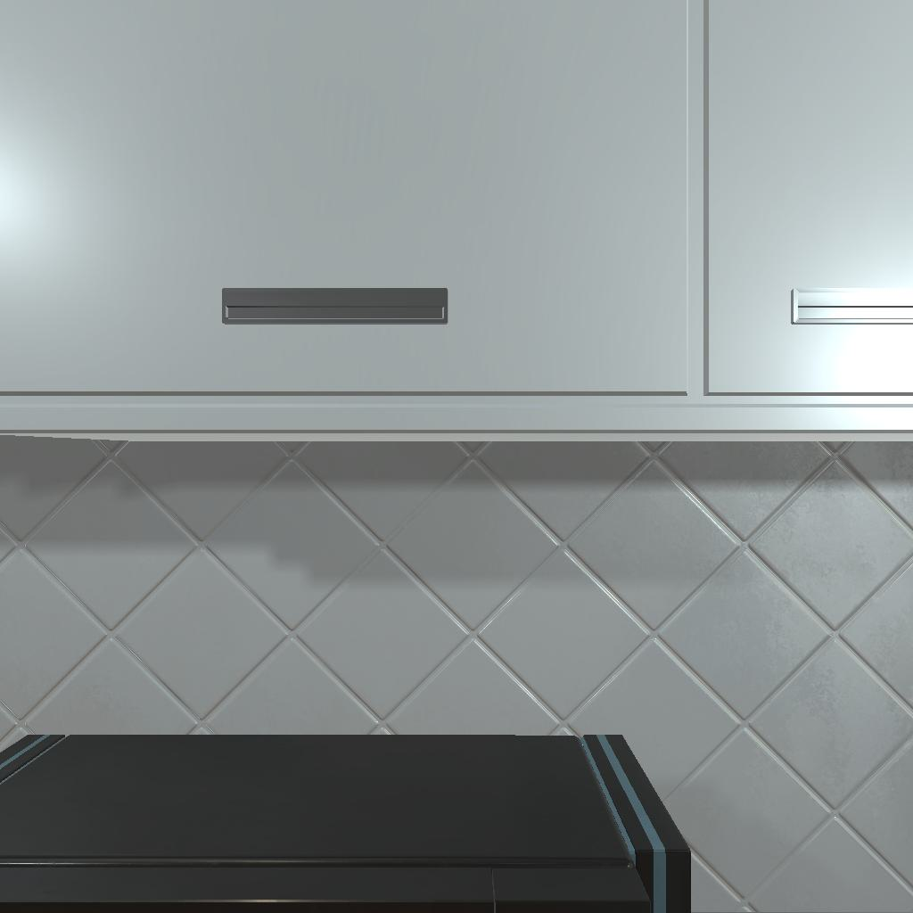

---------------------------------------------------------task: 21---------------------------------------------------------
--------------------------------------------------------------------------------------------------------------------------------------------------------------------
--------------------------------------------------------------------------------------------------------------------------------------------------------------------
Step:--------------------------------------------------------------------------8-------------------------------------------------------------------------------
----------------------------------------
VLM Prompt:
Image1:
Image2:
**Instruction**
1. Analyze the provided images to identify all visible household objects and compare the difference between images (e.h. whether the object is opened or not and taken on hand or not), focusing on those relevant to the task description "put a hot cup in countertop."
2. Use the analysis of images and the task hint "The agent must find an object of the desired type, pick it up, go to a microwave, heat the object with the microwave, then find the correct location to place it, and put it down there. The agent does not need to use the microwave button or open the microwave to heat the object, and the agent just needs to do action that is "heat the object with the microwave"." to answer the question: what is the most reasonable action in the choices for the task description "put a hot cup in countertop"?
3. Decide and write the answer using the template: The answer is: (i): , where i is the real number. If there is no desired object in images, search every place based on **Initial Observation** to find the object. And if no one is exactly correct, choose a similar answer.
**Initial Observation**
You are in the middle of a room. Looking quickly around you, you can see cabinet (1-6), microwave (1), countertop (1-2), coffeemachine (1), toaster (1), sink (1), sinkbasin (1), fridge (1)
**Answer Choices**
(1): go to cabinet 1
(2): go to microwave 1
(3): go to cabinet 5
(4): go to cabinet 6
(5): go to countertop 1
(6): go to coffeemachine 1
(7): go to toaster 1
(8): go to countertop 2
(9): go to sink 1
(10): go to sinkbasin 1
(11): go to fridge 1
(12): open cabinet 4
(13): close cabinet 4
(14): examine cabinet 4
**Answer**
Let's think step by step by following the instructions.
----------------------------------------
----------------------------------------
Original Response:
Analyzing the images, we can see that image 1 shows a closed cabinet with no visible objects on the countertop or in hand. Image 2 also shows a closed cabinet, but with a clear view of a countertop and no objects on it or in hand. Since we are looking for a hot cup, the cup is not visible in either image.
Based on the task description, the agent needs to find a cup, heat it in the microwave, and then put it on the countertop. Since we don't see the cup in the images, we need to search for it. The initial observation mentions a microwave and a coffeemachine, which are both likely places to find a cup.
Given the answer choices, the most reasonable action for the task description "put a hot cup in countertop" is to first find a cup. Since the cup is not in the visible cabinets, the agent should search in locations where a cup is likely to be found, such as near the coffeemachine or inside a cabinet.
However, none of the answer choices directly suggest finding a cup. The closest action related to interacting with an object that could hold a cup is opening a cabinet. Therefore, the most reasonable action from the choices given would be to open a cabinet where a cup might be stored.
The answer is: (12): open cabinet 4.
----------------------------------------
----------------------------------------
>>> Refine Original VLM Response and Get Pure Action: open cabinet 4
----------------------------------------
-----------------------------------------------------------------
Running time: 12.016296625137329 seconds
Total Money: 10.591320000000001
-----------------------------------------------------------------
-----------------------------------------------------------------
Text Observation:You open the cabinet 4. The cabinet 4 is open. In it, you see a saltshaker 1.
-----------------------------------------------------------------
UNSUCCEED